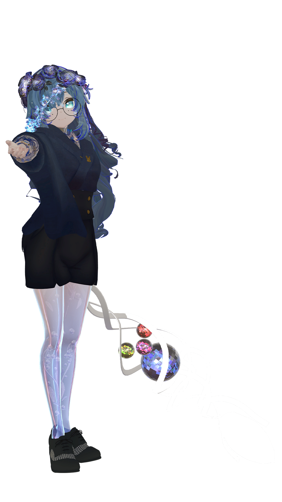
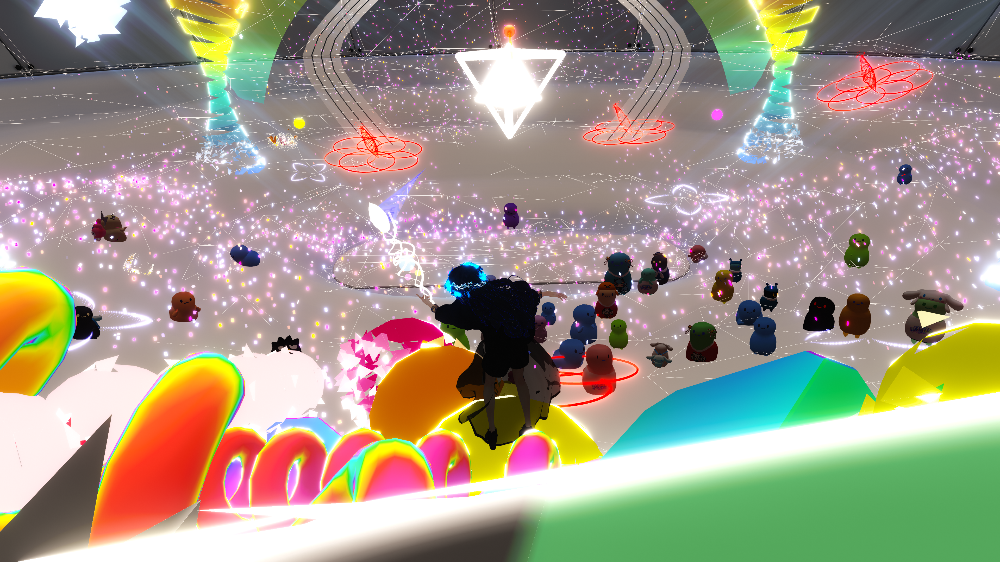
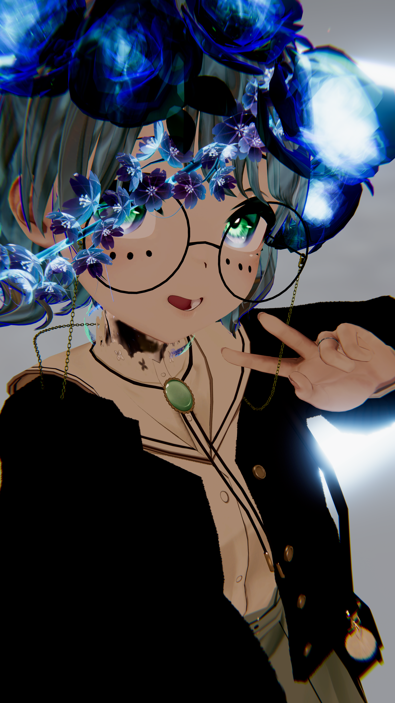
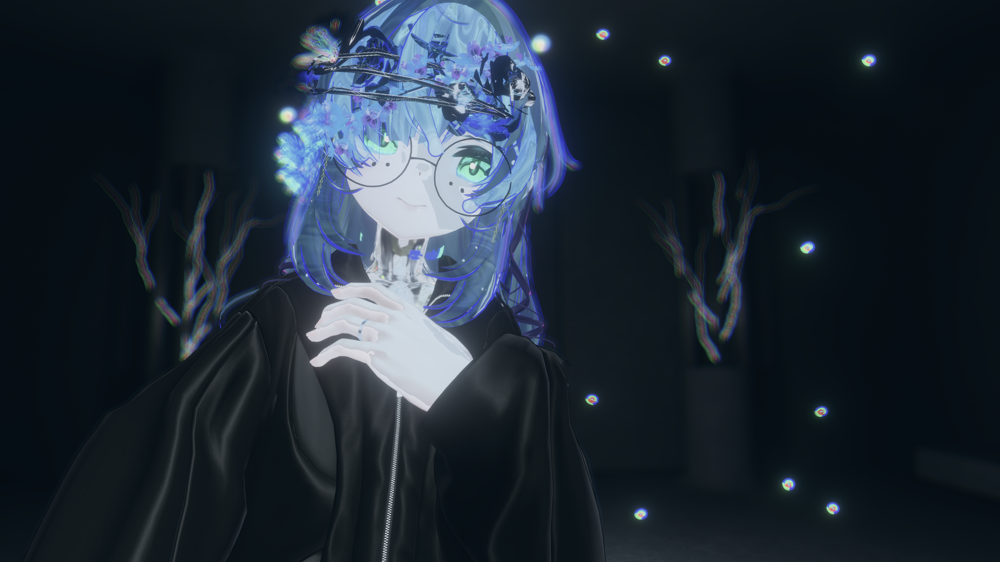

音と言葉と舞と光を武器に表現を突き詰める花の妖精・VTuber。
VRChatとリアルの両方で活動をしており、VR内では「パーティクル」や「シェーダー」、「オブジェクト」を使ったライブ演出の制作から、
ポエトリーを使った言葉の作品を披露しており、技術者とアーティストの二面性を持ったVTuberとして活動、
リアルでは、ダンサーとして様々なところで作品のお手伝いをしていたり、VTuberライブテクニカルスタッフとして裏方をしていたりと、
こちらでも技術者と表現者としての二面性を持った人としている。
ポチャッコをこよなく愛しており、座右の銘は「ポチャッコは人生、ポチャッコと一心同体。」と言われていたり言われていなかったり。
音ゲーが好きで、よく突発的に配信をしている。



Live_li_V_e -漂流日記-で披露した [-蝕-]のアンサーﾊﾟｰﾃｨｸﾙﾗｲﾌﾞです。
夜の水族館で夢を見る。とのコラボ。
ちょっとだけUPDATEして再登場。
ライブ演出/監督
出演、制作進行、モデリング、ワールドコーディネーター、などなど……
イベント「フラピッ！」のために作りました。
夢。